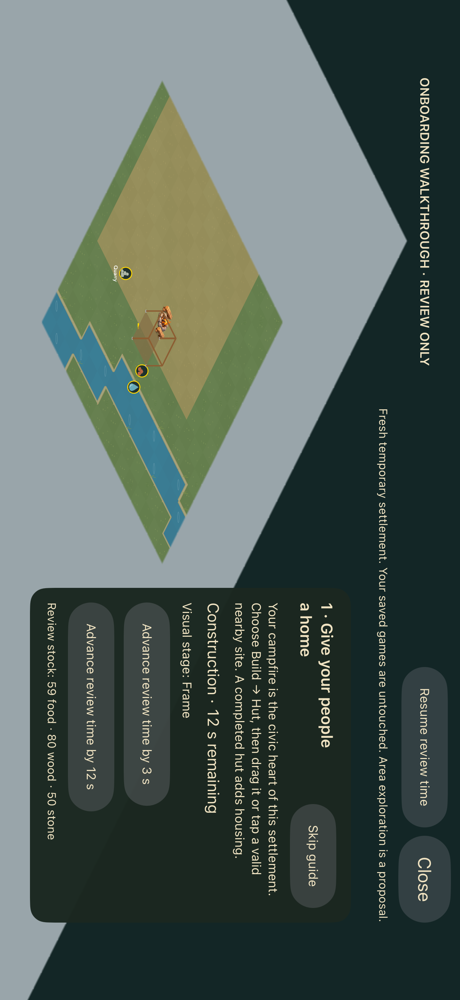
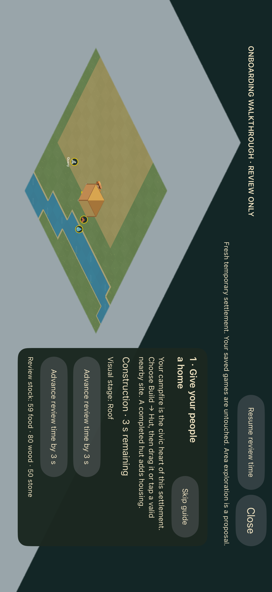
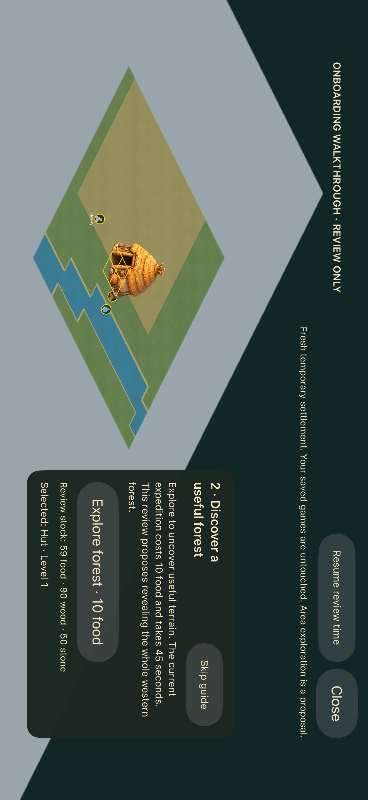
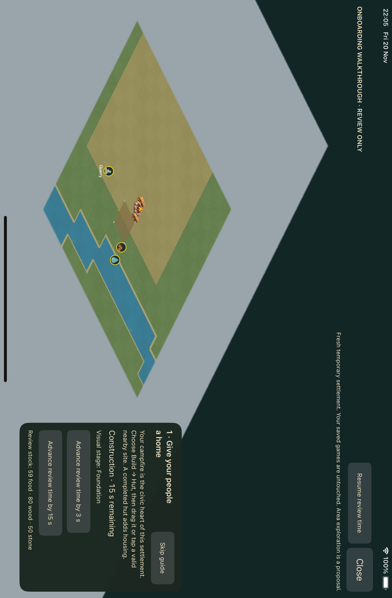
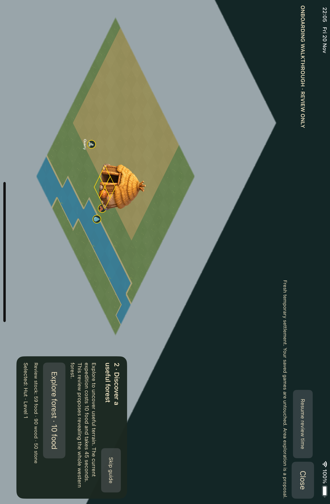
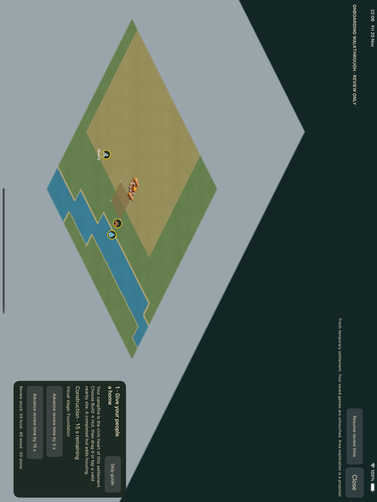
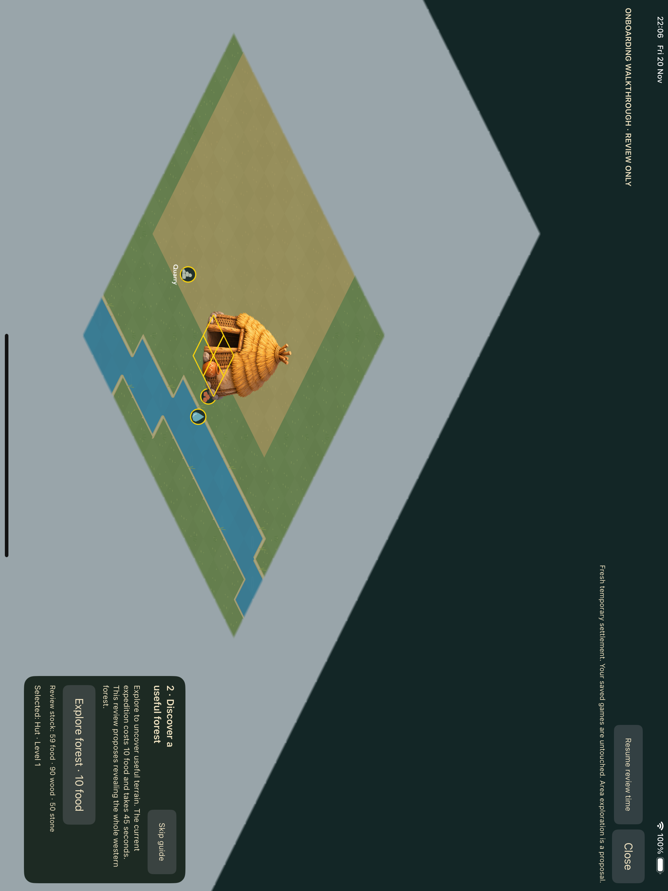
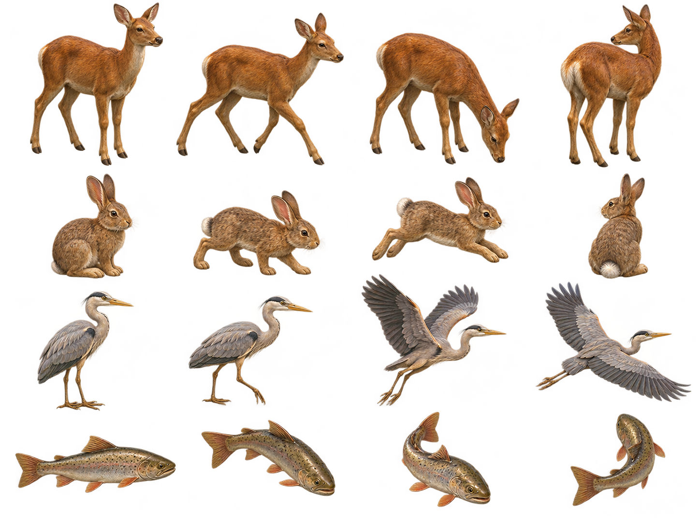

Construction through actual work
Five native stages in the disposable onboarding walkthrough. A real Hut costs20wood and takes15seconds of engine construction work. Pause review time holds that temporary engine; labeled3second advances produce the frame, walls, roof and actual completion. No normal game or save changes.
Foundation, timber, walls and roof are procedural visual proposals within the existing logical footprint. The temporary geometry disappears at completion and the original building asset returns. No final contact/anchor, directional art or appearance acceptance is inferred. The phone still runs33073e9.
Placement walkthrough · Atmosphere · Software evidence · Ledger
Phone
construction 01 foundation
construction 02 frameconstruction 03 walls
construction 04 roof
construction 05 finishedMini

construction 01 foundationconstruction 02 frameconstruction 03 wallsconstruction 04 roof
construction 05 finishedPro

construction 01 foundationconstruction 02 frameconstruction 03 wallsconstruction 04 roof
construction 05 finishedCharacter and wildlife concepts — unregistered frames, no runtime export
 villagers-review-v1
villagers-review-v1
wildlife-review-v1 villagers-review-v2
villagers-review-v2 wildlife-review-v2
wildlife-review-v2